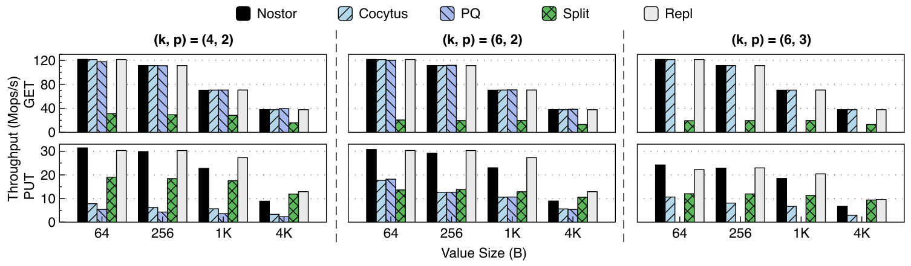
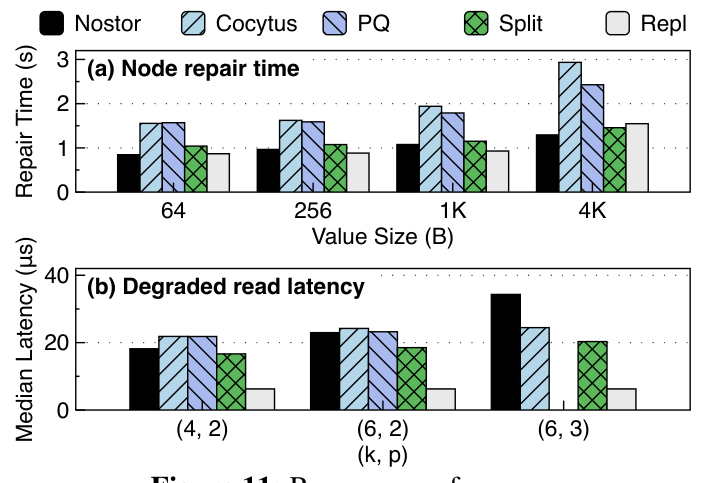

已读正式正文§1–8，设计证明/并发恢复/实验；检查作者README、HOWTOUSE与MIT许可证，未复现或观看报告。
Nos：把纠删码的条带协调移出微秒级内存写路径
Stripeless Data Placement for Erasure-Coded In-Memory Storage，OSDI 2025 正式论文，pp.821–838，会期 2025-07-07 至 09；本期为旧文补读，不是今日新发表。作者单位为清华大学（Jian Gao、Jiwu Shu、Bin Yan、Yuhao Zhang）和华为（Keji Huang）。
核心问题：编码算得快，条带放置仍可能拖慢请求
内存 KV 的值常小于 1 KB，RDMA 已把网络降至微秒级。此时传统 EC 的两种条带策略都付出可见成本：对象内切分使一次 GET 要访问 k 个节点，放大网络 IOPS；跨对象条带若静态哈希，尚不存在的对象留下空洞，若动态组条带，又需要额外元数据查询及集中协调。Nos 改变的是数据放置和编码时机，不是发明更快的 RDMA 原语，也不是声称 XOR 已取代所有 RS 码。
数据怎样写：先建立容错副本，再在各备节点独立压成校验
Nos 的 (k,p) 中 p 是可容忍失效数，k 是每个校验项最多混合的对象数。它要求 k>p，并按 SBIBD 对称平衡不完全区组设计建立 v=k²−k+1 个故障域的亲和矩阵：每个主节点有 k 个合法备节点，每两个主节点的合法备节点集合恰好交于一个节点；主节点不能备份给自己。每次选择其中 p+1 个备节点，先发送完整对象/更新 delta，然后备节点从不同来源各取一个对象，最多 k 个 XOR 成一个校验项。逻辑上暂存主副本加 p+1 备份，编码后的理想额外冗余为 (p+1)/k，而非 RS 的 p/k；总数据占用需再加主副本的 1。这一额外备份不是可随意去掉的浪费，它为多节点失效时避免循环依赖提供保证。
例如 k=4、p=2，需要13个故障域、每次从4个合法备节点选3个。不必把某组主对象固定绑成全局条带，所以备节点可各自选择组合和时间；但“无条带”不代表无放置限制，更不代表可任意向全体节点复制。k=6 时需要31个故障域，宽条带 k≈100 对应约万级故障域，不适合照搬。
Nostor 是上述设计的 Rust 内存 KV 原型，通信为用户态 RDMA 上的 RPC，服务器 CPU 仍维护 hash map、版本及编码。一次 PUT 的具体步骤是：
- 主节点为对象追加新版本并分配单调 SN；算出新旧值 XOR delta，插入/删除把缺失一端当作零。
- 并行发给该对象 p+1 个备节点。备节点前台线程仅入复制队列，避免编码进入关键路径；首次插入可绕开允许集合中的慢节点。
- 复制完成后主节点推进已提交序号 CSN、回收旧版本，才向客户端返回。其承诺是返回写已可见且具有规定节点故障容错，不是 SSD 持久化或全机房掉电耐久。
- 备节点后台只消化已提交 delta，CSN 随 RPC 携带。尚未提交的 delta 重新入队；正常 GET 读已提交版本，避免备份未齐的新版本被提前看到。
后台编码也不是简单凑齐就 XOR：每个复制源有独立队列，等待某源超过10μs就跳过以免阻塞，并形成不足 k 个对象的 partial parity；另以按来源分类的 partial-parity 队列，后续把不冲突来源的对象补进去。并发后台线程先为新 key 安装 placeholder，再完成校验项，避免把同一对象的两个 delta 都识别成首次插入。实现使用 DashMap 分片读写锁和对象版本队列锁，不能写成全程 lock-free。
故障窗口：编码完成与写入提交是两件事
主节点可能在部分副本入队后、客户端收到返回前崩溃。此时各备节点先停止消化该源队列，交换所有待处理 delta 的 SN 集合以确定提交边界，丢弃未提交后缀，再完成已提交队列，达到一致状态后提供降级读。只交换“最大 SN”不足以推断哪些写真正复制齐全，这是恢复协议的重要细节。
降级读先向仍活着的备节点询问校验元数据，选包含失效对象最少的校验项；读取该校验及其他 encodee，通过 XOR 还原。若其中还有失效对象，SBIBD 结构保证可以先恢复它们，递归不会再向更深层展开。最坏单请求可能读取 O(kp) 个对象，尽管把顺带恢复的对象摊销后不超过每失效对象 k 个读取。因此“平均恢复工作量可控”并不等于“单次降级读延迟更低”。
原型不支持降级写：主节点失效，或无法向 p+1 个存活合法备节点复制时，写被阻塞。故障模型仅 fail-stop，不处理 Byzantine；网络分区可能阻塞 PUT。替换节点须分别恢复主数据和校验后才上线；新校验组合可以与失效前不同。论文不建立跨对象事务、跨机架相关失效、持久化日志恢复或通用分区下写可用性。
实验：为什么有收益，什么场景会输
测试在 CloudLab 的16台 c6525-100g：每台24核 AMD 7402P、128 GB DDR4、单端口 ConnectX-5 Ex 100Gb，Ubuntu22.04/kernel5.19、DOCA-OFED2.10、ISA-L2.31.1（AVX2）。每物理机运行两个 server，各18个逻辑核（12前台+6后台），client占余下12个逻辑核、每线程32协程。两个 server 共用一台物理机不等于两个独立故障域；作者因资源受限模拟到31个 server，实际部署必须独立放置。文中测试网络 MTU 为9000B，不能与 verbs 4096B path MTU 混写。
基线 Cocytus 被逐行移植到同一 RDMA 框架，并非原版 TCP 直接对比；PQ 把编码换为 P+Q，Split 在对象内切块，Repl 为 p+1 路复制。PQ只支持p=2。因而主要差异在条带分配、编码和请求扇出，而不是某组独享高速网络。
- 图3/§6.2.1：≤256B 时，Nos GET 吞吐为 Split 的3.92×（k=4）、6.06×（k=6），近似 k 倍支持“扇出耗尽网络 IOPS”的解释；1KB/4KB时收益降至2.40–3.57×。其余不拆对象的 GET 基线相近，所以不是 Nos 对所有读路径都更快。
- 同图的 PUT 反例：64B Nos与Repl相近；1KB/4KB吞吐分别只有Repl的87.4%和69.7%，因为 Nos 多发一个备份，大值先触及网络带宽。相对Cocytus/PQ的收益主要来自避开条带分配和同步，不宜归功于“XOR比矩阵计算快”一个因素。
- 图9–10/§6.3，真实 Twemcache trace：作者报告比各EC基线吞吐提高至1.61–2.60×。四条trace从56B到2506B平均对象、7%到94%写覆盖不同混合负载；总体吞吐横轴不是纯PUT吞吐。PUT p99 仍比 Repl 高26.8%（Cluster31）和39.6%（Cluster12），所以“类似中位延迟”不能换成“尾延迟一样”。
- 图11/§6.4：k=4,p=2双server失效重建时，Split修复耗时比Nos高16.4%；这不是Nos耗时减少16.4%的同一口径。64B降级读在p=2下，Nos比Split平均慢16.5%；特意选择k=6,p=3使递归出现的最坏节点组合时，比Cocytus慢35.0%、比Split慢62.4%。不能用常态吞吐掩盖恢复尾部。
- 图12/§6.5：填充5000万对象，Repl实测内存是Nos的1.23–2.35×；不仅要计入冗余字节，还要计 encodee key、hashmap、版本和待编码队列。小对象下元数据成本明显，理想编码比例不能直接当实际容量预算。
对分布式存储：先在可重建内存层验证，别直接替换持久 EC
工程推断：最匹配的是低延迟内存 KV、热对象缓存和共享远端缓存的容错层。对于频繁更新小对象，避免读扇出和同步条带分配可能比减少一次 XOR 更重要；对于大块不可变对象、SSD容量层或宽条带冷数据，额外网络副本和刚性故障域通常不划算。KV cache中可重建的page/token块也可比较，但其对象大小往往远大于本文小KV，应先验证是否已带宽受限，不能借56B结果预测几十KB块收益。
建议先选 k=3,p=1 的7个独立故障域，比较同RPC框架的Nos、复制、对象内/跨对象EC：扫64B/256B/1KB/4KB及实际缓存块、写比例、Zipf偏斜、到达突发；记录吞吐、p50/p99、每请求RPC数、出网字节、编码CPU、未编码delta队列深度与真实内存占用。原作者MWE至少7节点，但仅验证无故障微基准成功，并不证明恢复协议。
必须在复制未齐、复制齐而CSN尚未传播、后台XOR进行中三个窗口注入主/备失效，核查所有已ACK写是否可读；并测一次故障后写阻塞范围及修复期间业务p99。扩缩容要验证subcluster重映射和同机架共故障，避免把31个进程当31个独立容错节点。若要生产应用，还需补幂等重试、故障检测、重建限速及持久来源恢复方案，再重新测性能。
阅读与参考资料
已阅读正式PDF正文§1–8，重点核对§4设计与证明、§5并发/恢复、§6实验及图3/9–12；检查作者仓库README和MIT许可证，未复现实验、未观看完整报告视频、未逐行审计实现。
- 官方论文页与报告入口
- 正式PDF
- 作者实现与复现实验说明
- RPC引擎文档；RDMA封装文档（进一步阅读入口，本轮未逐项审计API）


GET只有Split因k路扇出明显落后；大值PUT下Nos仍低于Repl，不能用小对象结果承诺大块复制加速。单位Mops/s，三列分别为不同(k,p)。
Jian Gao, Jiwu Shu, Bin Yan, Yuhao Zhang, Keji Huang · OSDI 2025 · PDF 第10页 · 技术评论节选
原文与上下文 ↗

上图修复时间秒，下图降级读中位延迟微秒；(6,3)特选递归恢复最坏组合，Nos黑柱最高。两图衡量的不是同一故障指标。
Jian Gao, Jiwu Shu, Bin Yan, Yuhao Zhang, Keji Huang · OSDI 2025 · PDF 第13页 · 技术评论节选
原文与上下文 ↗